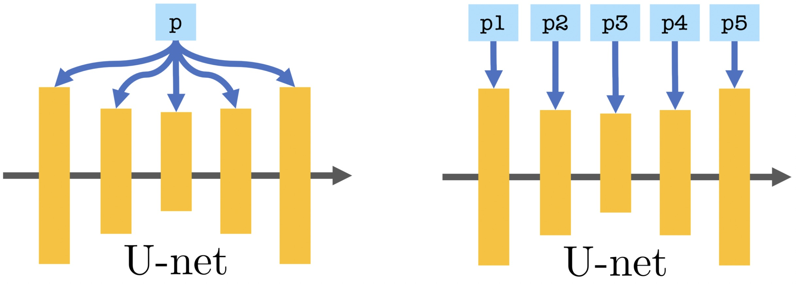
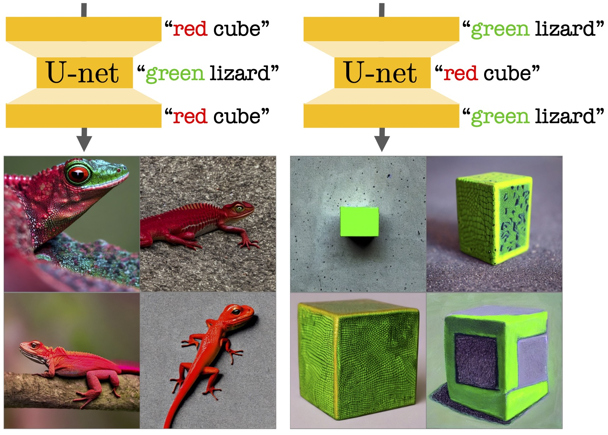
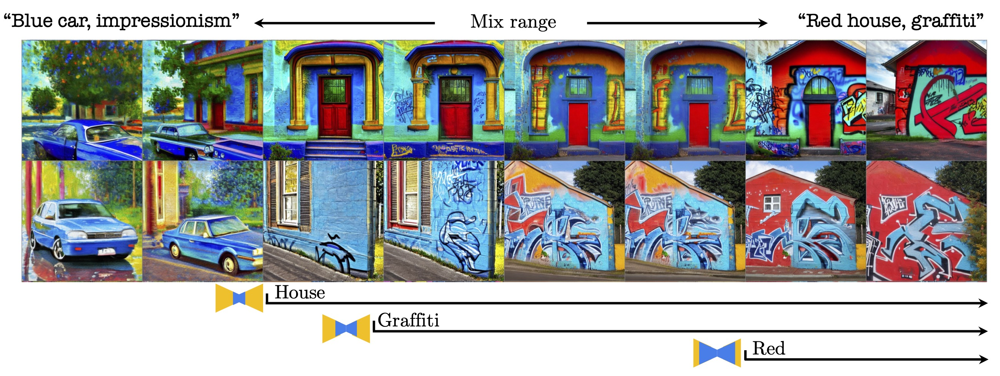
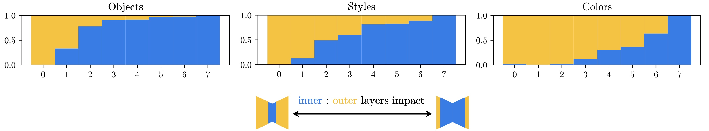
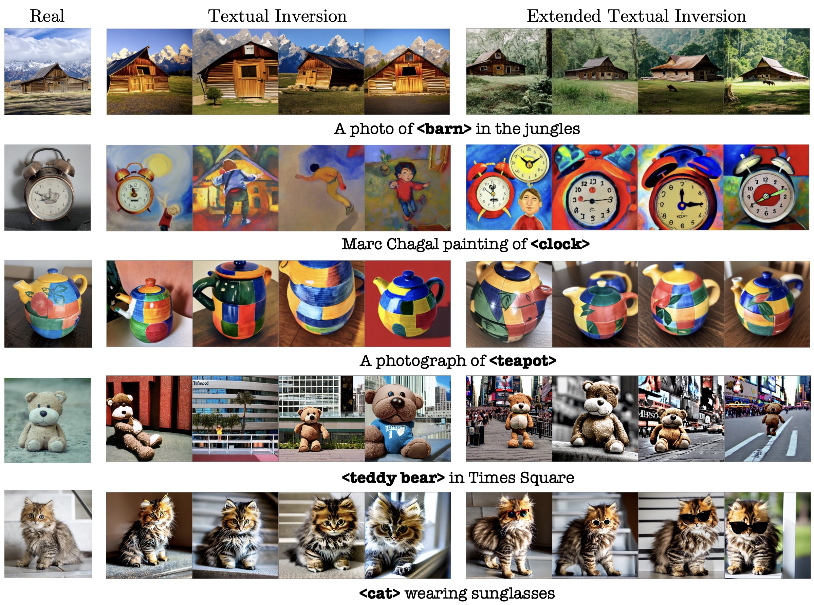
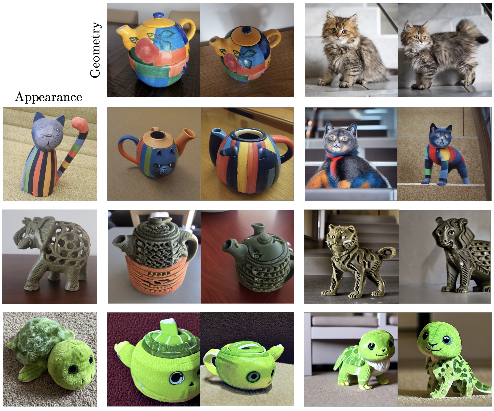

P+: Extended Textual Conditioning in Text-to-Image Generation
Andrey Voynov1 Qinghao Chu1 Daniel Cohen-Or1,2 Kfir Aberman1
1 Google Research 2 Tel Aviv University

P vs. P+. Standard textual conditioning, where a single text embedding is injected to the network (left), vs. our proposed extended conditioning, where different embeddings are injected into different layers of the U-net (right).
Paper
Abstract
We introduce an Extended Textual Conditioning space in text-to-image models, referred to as P+. This space consists of multiple textual conditions, derived from per-layer prompts, each corresponding to a layer of the denoising U-net of the diffusion model.
We show that the extended space provides greater disentangling and control over image synthesis. We further introduce Extended Textual Inversion (XTI), where the images are inverted into P+, and represented by per-layer tokens.
We show that XTI
is more expressive and precise, and converges faster than the original Textual Inversion (TI) space.
The extended inversion method does not involve any noticeable trade-off between reconstruction and editability and induces more regular inversions.
We conduct a series of extensive experiments to analyze and understand the properties of the new space, and to showcase the effectiveness of our method for personalizing text-to-image models. Furthermore, we utilize the unique properties of this space to achieve previously unattainable results in object-style mixing using text-to-image models.
Motivation
To motivate this work we demonstrate a simple experiment on the Stable Diffusion model to explore how conditioning prompts affect different subsets of cross-attention layers in the denoising U-net. By injecting "red cube" and "green lizard" prompts into separate subsets of layers, we generated images of a red lizard and a green cube. Our experiment suggests that prompts are processed differently at different resolutions. With this in mind, our work aims to further explore this phenomena and its potential applications.

Per-layer Prompting. We provide different text prompts to different cross-attention layers in the denoising U-net. We see that color "red", "green" is determined by the fine outer layers and content "cube", "lizard" is determined by the coarse inner layers.
P+ Analysis

Visualization of mixed conditioning of the U-net cross-attention layers. The rows represent two different starting seeds and the columns represent eight growing subsets of layers, from coarse to fine. We start by conditioning all layers on "Blue car, impressionism" in the left column. As we move right, we gradually condition more layers on "Red house, graffiti", starting with the innermost coarse layers and then the outer fine layers. Note that shape changes ("house") take place once we condition the coarse layers, but appearance ("red") changes only take place after we condition the fine layers.

Relative CLIP similarities for
object,
color style attributes, by subset of U-net layers. Orange represents the similarity to the first prompt, and blue represents similarity to the second. As we move from left to right, we gradually grow the subset of layers conditioned with the second prompt from coarse to fine.
Extended Textual Inversion (XTI)
We introduce Extended Textual Inversion (XTI), where we invert the input images into a set of token embeddings, one per layer, namely, inversion into P+. Our findings reveal that the expanded inversion process in P+ is not only faster than TI, but also more expressive and precise, owing to the increased number of tokens that provide superior reconstruction capabilities. Remarkably, the improved reconstruction does not compromise editability, as demonstrated by our results.

Textual Inversion (TI) vs. Extended Textual Inversion (XTI). Column 1: Original concepts. Column 2: TI results. Column 3: XTI results. It can be seen that XTI exhibits superior subject and prompt fidelity, as corroborated by the results of our user study.
XTI also significantly improves all concept inversion metrics in both standard and single-image setup.
Style Mixing
We can mix geometry and appearance by passing different subjects' inversions to coarse and fine layers of the diffusion denoising U-net:
More results:

Geometry-style mixing with a shape taken from first column, and style from top row.
BibTex
@article{voynov2023P+,
title={P+: Extended Textual Conditioning in Text-to-Image Generation},
author={Voynov, Andrey and Chu, Qinghao and Cohen-Or, Daniel and Aberman, Kfir},
booktitle={arXiv preprint},
year={2023}
}
Acknowledgements We thank Eric Tabellion, Rinon Gal, Miki Rubinstein, Matan Cohen and Jason Baldridge and Yael Pritch for their valuable inputs that helped improve this work.